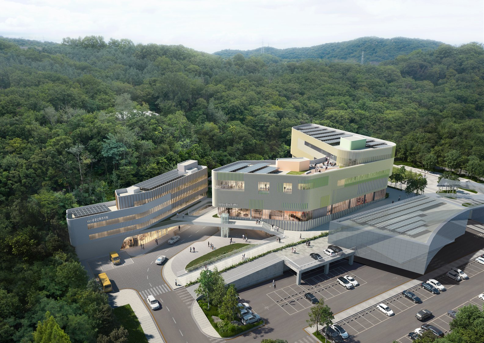

인천 아이사랑드림센터에 롯데·초록우산 실내놀이터…471㎡ 무료로 2027년 연다
시는 공간·운영, 롯데는 사업비, 초록우산은 설계·시공…「mom편한 놀이터」 34호점
인천 출생아 1~8월 14.8% 늘 때, 영유아 열에 여섯은 유료 키즈카페
시는 공간과 운영, 롯데는 사업비
AI경제저널=김갑봉 기자 | 인천시는 6일 시청에서 롯데지주, 초록우산과 「mom편한 놀이터 사업」 업무협약을 맺었다. 롯데그룹과 초록우산의 공모에 인천시가 뽑혀 맺은 협약이다.
시는 9월 부평구에 준공한 아이사랑드림센터 A동 2층 전시체험관 1347㎡ 가운데 471.3㎡를 내놓고, 준공 뒤 유지보수와 운영을 맡는다. 롯데지주는 사업비를 대고 초록우산은 설계와 시공을 맡는다. 보도자료는 롯데지주가 낼 사업비 규모를 밝히지 않았다.
놀이터는 어린이놀이시설 안전기준을 갖춘 지역개방형 공공시설로 무료로 운영된다. 11월 공사를 시작해 2027년 1월 준공하고 시범운영을 거쳐 2027년 상반기 정식으로 문을 연다. 2017년 시작한 「mom편한 놀이터」의 34호점이다.

338억 육아센터, 계획보다 1년 반 늦게 준공
보도자료에 붙은 센터 조감도에는 「인천시 공공산후조리원」과 「아이사랑누리센터」라는 이름이 적혀 있다. 시가 2023년 9월 착공하며 밝힌 「혁신육아복합센터」(아이사랑 누리센터와 공공산후조리원 2개 동, 연면적 9538㎡, 총사업비 338억원)의 두 동 이름이다. 당시 계획에도 실내 놀이터와 체험공간, 가족 물놀이 체험장이 들어 있었다.
시는 그때 2025년 3월 준공, 5월 개관을 내걸었다. 센터는 올해 9월 준공했고, 놀이터 자리는 민간 사회공헌 재원으로 채운다. 짓는 돈은 기업이 내도 문을 연 뒤의 운영과 유지보수 비용은 시 예산이 진다.
아이는 늘고, 놀 곳은 돈을 낸다
수요는 커지고 있다. 국가데이터처 인구동향을 보면 올해 1~8월 인천 출생아는 1만2688명으로 1년 전보다 14.8% 늘었다(국내 14.5%). 8월 인천 조출생률은 인구 1000명당 6.0명으로 국내 5.5명보다 높았다.
놀 곳은 대개 돈을 내야 한다. 육아정책연구소 「KICCE 소비실태조사 2025」를 보면 2024년 영유아의 58.6%가 키즈카페를 이용했고, 한 달 평균 3.0회, 한 번에 2.3시간을 머물렀으며 한 달 평균 이용비용은 1만2000원이었다. 이용 비중은 코로나19가 번진 2020년 14.7%까지 떨어졌다가 다시 올라왔다.
시가 운영하는 영유아 공동육아 공간 「아이사랑꿈터」는 10개 군·구 60곳에서 2025년 이용자 34만명을 넘었다. 이용료는 일반 1000원, 프로그램 2000원이다. 무료로 여는 471㎡ 실내놀이터가 이 수요의 어디까지 받을지, 기업 재원이 끊긴 뒤에도 같은 수준으로 운영될지가 남은 물음이다.
참고문헌
- 인천광역시 영유아정책과(2026.11.6). 「인천시, 롯데·초록우산과 민간 협력‘mom편한 놀이터’ 조성」(보도자료 원문 hwpx·참고 아이사랑드림센터 현황도). https://www.incheon.go.kr/IC010205/view?repSeq=DOM_0000000015918501
- 인천광역시 영유아정책과(2023.9.8). 「공공산후조리원 갖춘 혁신육아복합센터 첫 삽 …25년 준공」. https://www.incheon.go.kr/IC010205/view?repSeq=DOM_0000000008349146
- 인천광역시 영유아정책과(2025.12.15). 「영유아 전용 ‘인천 아이사랑꿈터’ 이용자 34만 명 돌파」. https://www.incheon.go.kr/IC010205/view?repSeq=DOM_0000000013746568
- 국가데이터처 인구동향과(2026.10.28). 「2026년 8월 인구동향」. https://eiec.kdi.re.kr/policy/materialView.do?num=288635
- 육아정책연구소(2026.3.27). 「영유아 가구 양육비용 및 육아서비스 이용 실태 조사: KICCE 소비실태조사 2025: 하권」. https://repo.kicce.re.kr/handle/2019.oak/5923
- 육아정책연구소(2026.3.27). 「영유아 가구 양육비용 및 육아서비스 이용 실태 조사: KICCE 소비실태조사 2025: 상권」. https://repo.kicce.re.kr/handle/2019.oak/5922
[사진 출처]
- [사진1] 인천광역시 보도자료 「인천시, 롯데·초록우산과 민간 협력‘mom편한 놀이터’ 조성」 붙임 아이사랑드림센터 조감도, 공공누리 출처표시, 2026.11.6., https://www.incheon.go.kr/IC010205/view?repSeq=DOM_0000000015918501
관련기사
- 인천시 아동복지관 루원시티로…12년 만에 청사 두 배
- 소래염전 천일염 7톤 김장 나눔…90년 소금창고 둔 염전, 국가도시공원 문턱에
- 인천시 내년 예산 15조9천억…정부 이전재원이 자체수입 앞섰다
- 인천 주민자치박람회 7일 월미도…주민자치회 법제화 뒤 첫 한마당
저작권자 © AI경제저널 무단전재 및 재배포, AI학습 및 활용 금지